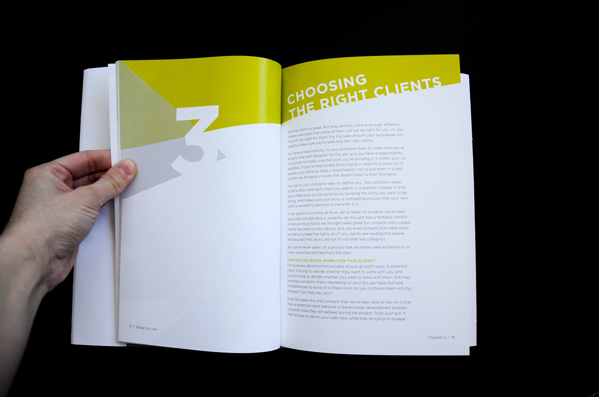
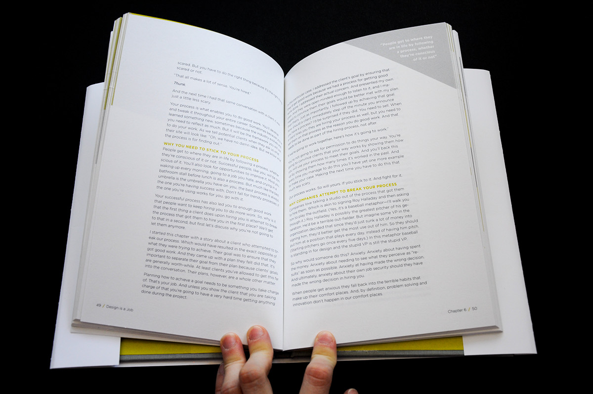
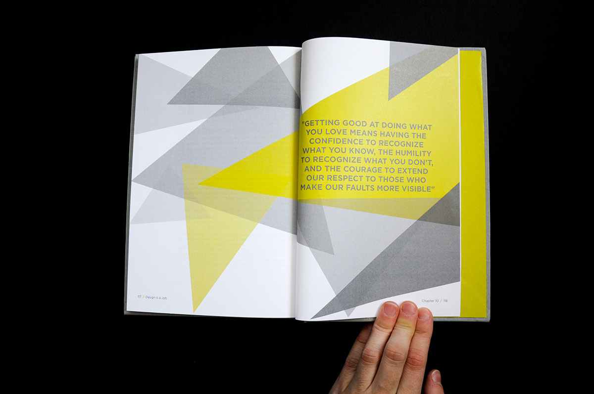
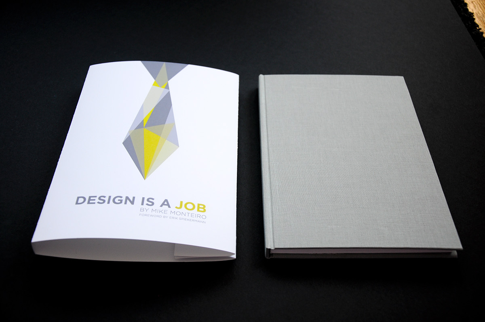
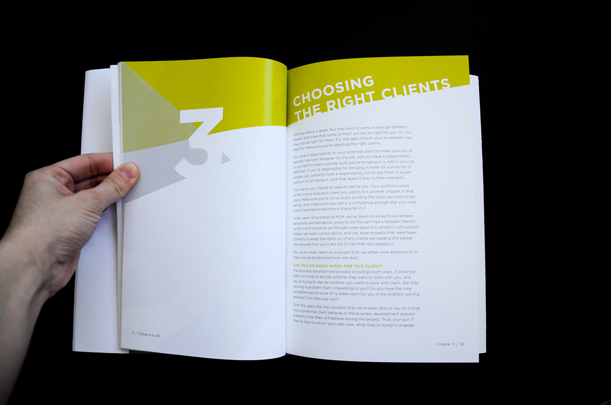
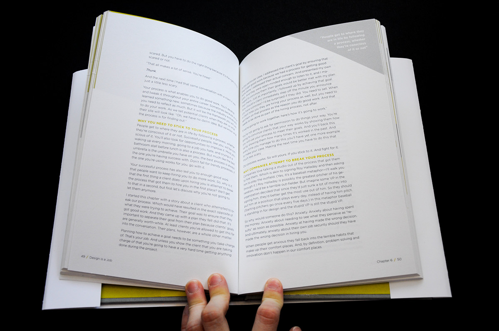
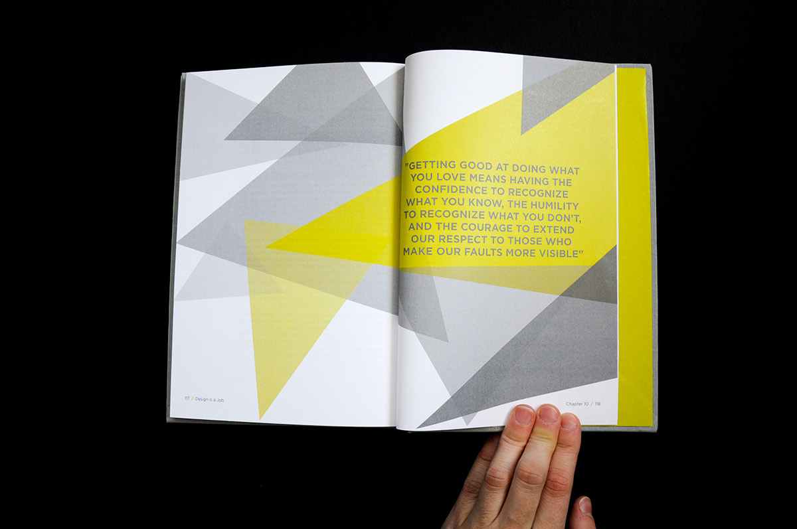
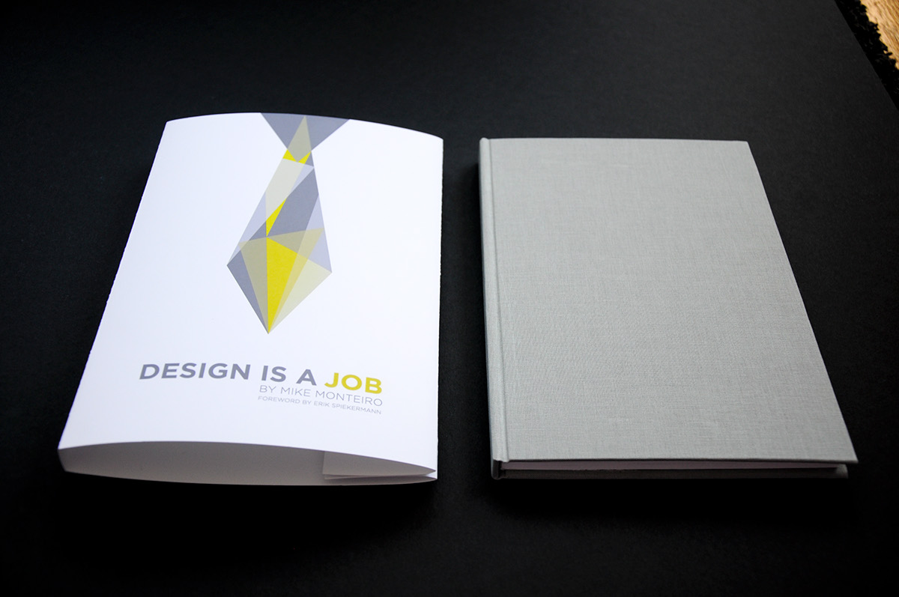

Using the entire text of Mike Monteiro's Design is a Job, I designed and hand-binded a book. The text of the original book was supplied in the form of a word document, and from there I started to build my book using InDesign. The goal of this project was to get experience in typesetting and massaging a long text, setting up and working with a multi-page grid as well as hand-binding the book.
After reading through each chapter, I learned that the book is very structured and business oriented but has a sarcastic feeling. I chose to represent this by the use of geometric shapes to emphasize the content of the book as well as its tone.
 






